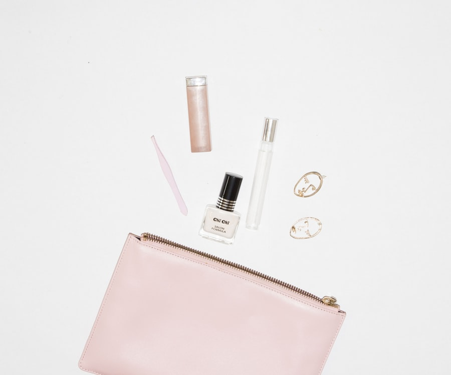
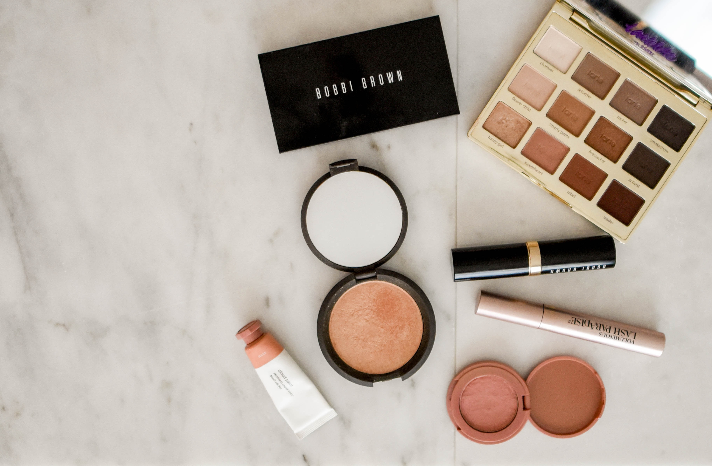

Over time, our brushes can look a bit worn out but you have to make them last a couple of months before you set off and buy yourself £70 worth of Zoeva brushes. Best way to maintain your brushes is to regularly clean them with a bit of shampoo and a towel and it literally works a treat. Storing your brushes in either a clear glass cup or a mug is an ideal way to save money or you can grab yourself an IKEA pot. Keep your brushes separate to your makeup products,it keeps it all organised and you know which brush to grab first without rummaging through blushers. You could also hold your brushes in a stackable glass drawer to make your vanity look pretty.
Storing makeup for travel
Grab yourself a PRIMARK toiletry bag and place all your travel size makeup inside. It would be ideal to buy minis of palettes and blushes so that you’re not carrying around heavy load of makeup around with you. This can include: the urban decay mini setting spray which is only around 30ml, ideal to fit into your toiletry bag. Brushes can be difficult to store as you wouldn’t want to carry too much without leaving behind the essential daily brushes. Every girl has about 20 different daily brushes, which excludes the occasional makeup brushes. So placing your brushes in a book/ compact bag will protect your brushes from any further damage.

Storing Palletes
Makeup palletes can come in all different shapes and sizes but ordering them in a file organizer away from the vanity area, keeps your place looking neat and tidy, unless you apply eyeshadow every day. Smaller makeup palletes e.g. blush, contour palletes should be kept separate to ensure you don’t get them all mixed up. Hanging organizers on the wall can also be ideal if you want your makeup palletes noticeable to reach out for if needed. Drawer organizers from IKEA can be life changing if you’re a MUA who has over 500 products and just need to be put away out of sight.

Storing Lipsticks
Makeup palletes can come in all different shapes and sizes but ordering them in a file organizer away from the vanity area, keeps your place looking neat and tidy, unless you apply eyeshadow every day. Smaller makeup palletes e.g. blush, contour palletes should be kept separate to ensure you don’t get them all mixed up. Hanging organizers on the wall can also be ideal if you want your makeup palletes noticeable to reach out for if needed. Drawer organizers from IKEA can be life changing if you’re a MUA who has over 500 products and just need to be put away out of sight.